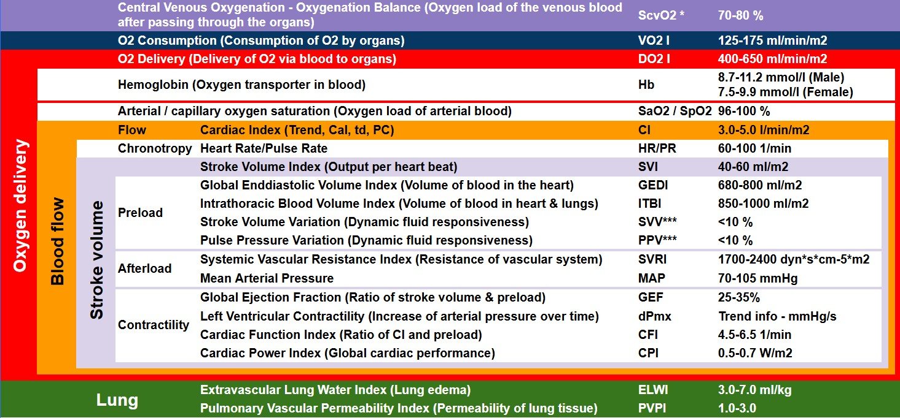

📖 Contents
1. Principles (TPTD + pulse contour)
2. Key parameters & normal ranges
3. Clinical decision tree & scenarios
4. Equipment, insertion & calibration
5. Indications & contraindications
6. Advantages & limitations
7. Practical tips & troubleshooting
8. References & further reading
1. Principles (TPTD + pulse contour)
2. Key parameters & normal ranges
3. Clinical decision tree & scenarios
4. Equipment, insertion & calibration
5. Indications & contraindications
6. Advantages & limitations
7. Practical tips & troubleshooting
8. References & further reading
🔬 1. How PiCCO Works – Two Complementary Technologies

🌡️ Transpulmonary Thermodilution (TPTD)
- Cold bolus (≤8 °C saline, 15 mL) injected via central venous catheter.
- Bolus passes right heart → lungs → left heart → thermistor‑tipped arterial catheter (femoral).
- Monitors temperature change → Stewart‑Hamilton equation → cardiac output (CO).
- Also yields GEDV (global end‑diastolic volume), ITBV, EVLW (extravascular lung water).
📈 Pulse Contour Analysis (PCCO)
- Modified Wesseling algorithm analyses arterial pressure waveform beat‑by‑beat.
- Calibrated with TPTD‑derived CO → continuous CO, SV, SVV, PPV, dPmx, SVR.
- Provides real‑time dynamic preload indices (SVV/PPV) and contractility trend (dPmx).
- Requires a stable arterial waveform (dicrotic notch visible).
💡 Core equations: GEDV = ITTV – PTV · ITBV = 1.25 × GEDV · EVLW = ITTV – ITBV · PVPI = EVLW / PBV.
📊 2. Key Parameters – Definitions & Normal Ranges
🫀 Preload & volume status
| Parameter | Normal range | Interpretation |
|---|---|---|
| GEDVI (Global End‑Diastolic Volume Index) | 680 – 800 mL/m² | Volume in all four chambers – superior to CVP/PCWP, unaffected by ventilation/compliance. |
| ITBVI (Intrathoracic Blood Volume Index) | 850 – 1000 mL/m² | Direct preload measure; cardiac + pulmonary blood volume. |
| SVV (Stroke Volume Variation) | <10 % (<12% some sources) | Dynamic fluid responsiveness predictor (requires regular rhythm, Vt ≥7 mL/kg). |
| PPV (Pulse Pressure Variation) | <10 % | Similar to SVV, limited by arrhythmias. |
❤️ Cardiac function & output
| Parameter | Normal range | Interpretation |
|---|---|---|
| CI (Cardiac Index) | 3.0 – 5.0 L/min/m² | Flow/metre²; ↓CI = low output state. |
| CFI (Cardiac Function Index) | 4.5 – 6.5 /min | CI/GEDVI – load‑independent contractility; ↓CFI = myocardial depression. |
| GEF (Global Ejection Fraction) | 25 – 35 % | 4×SV/GEDV – global systolic function. |
| dPmx (dP/dt max) | 1200 – 2000 mmHg/s | Rate of LV pressure rise – contractility (from pulse contour). |
🩸 Afterload & lung water
| Parameter | Normal range | Interpretation |
|---|---|---|
| SVRI (Systemic Vascular Resistance Index) | 1700 – 2400 dyn·s·cm⁻⁵·m² | ↑ = vasoconstriction (hypovolaemia, vasopressors), ↓ = vasoplegia (sepsis). |
| EVLWI (Extravascular Lung Water Index) | 3 – 7 mL/kg | Pulmonary oedema quantification; >10 mL/kg severe; predicts mortality. |
| PVPI (Pulmonary Vascular Permeability Index) | 1.0 – 3.0 | >3 → permeability oedema (ARDS); ≤3 + high EVLW → hydrostatic oedema. |
| ScvO₂ (Central Venous Oxygen Saturation) | 70 – 80 % | Balance O₂ delivery/consumption; calibrate daily. |
🔄 3. Clinical Decision Tree & Common Scenarios
📐 PiCCO‑based haemodynamic algorithm (2025)
Low CI (<2.5 L/min/m²)
├─ SVV >10 % → GEDVI low → hypovolaemia → FLUID
└─ SVV <10 %
├─ CFI low (<4.5) or dPmx <1200 → contractility → INOTROPE (dobutamine, milrinone)
└─ CFI normal → high afterload (SVRI high) → VASODILATOR
Normal or high CI
├─ MAP low → SVRI low → vasoplegia → VASOPRESSOR (norepinephrine)
└─ MAP normal → check EVLWI
├─ EVLWI high, PVPI normal → hydrostatic oedema → DIURETIC, LIMIT FLUIDS
└─ EVLWI high, PVPI high → permeability oedema (ARDS) → protective ventilation, restrict fluids, consider recruitment
├─ SVV >10 % → GEDVI low → hypovolaemia → FLUID
└─ SVV <10 %
├─ CFI low (<4.5) or dPmx <1200 → contractility → INOTROPE (dobutamine, milrinone)
└─ CFI normal → high afterload (SVRI high) → VASODILATOR
Normal or high CI
├─ MAP low → SVRI low → vasoplegia → VASOPRESSOR (norepinephrine)
└─ MAP normal → check EVLWI
├─ EVLWI high, PVPI normal → hydrostatic oedema → DIURETIC, LIMIT FLUIDS
└─ EVLWI high, PVPI high → permeability oedema (ARDS) → protective ventilation, restrict fluids, consider recruitment
🧫 Septic shock
- SVV/PPV to guide fluids.
- SVRI to titrate norepinephrine.
- EVLWI/PVPI to differentiate ARDS from volume overload.
- ScvO₂ & CI guide inotrope need.
🫀 Cardiogenic shock
- Low CI, low CFI/GEF, normal or high GEDVI (congestion).
- Use inotropes (dobutamine, milrinone).
- EVLWI often elevated (hydrostatic). Diuretics after stabilisation.
🫁 ARDS & pulmonary oedema
- EVLWI quantifies oedema severity; >10 mL/kg → poor outcome.
- PVPI >3 confirms permeability defect.
- Guides fluid restriction and diuretic therapy.
❤️🩹 Post‑cardiac surgery
- GEDVI optimises preload without excessive volume.
- dPmx trends help weaning of inotropes.
- EVLW detects early pulmonary oedema.
🛠️ 4. Equipment, Insertion & Calibration
📦 Required components
- PiCCO arterial catheter (4 Fr, 16 cm or 20 cm, femoral preferred).
- Standard central venous catheter (IJ/subclavian for optimum thermodilution; femoral possible with adjusted catheter position).
- PiCCO monitor (standalone or Philips IntelliVue module).
- Injectate temperature sensor + 15 mL ≤8 °C saline syringes.
- Pressure transducer, flush system (300 mmHg).
📌 Step‑by‑step first calibration
- Insert CVC and PiCCO arterial line, zero arterial transducer.
- Enter patient height/weight → BSA automatically calculated.
- Connect temperature sensor to CVC injection port.
- Perform 3–5 thermodilution measurements: inject 15 mL ≤8 °C saline rapidly (≤5 s). Wait ≥5 min between injections.
- Monitor rejects invalid curves (injection time >10 s, irregular shape).
- Average of at least 3 measurements calibrates pulse contour → continuous PCCO, SVV, dPmx.
⏱️ Recalibration frequency: every 8 h in stable patient; after any major haemodynamic change (fluid bolus, vasopressor change, arrhythmia, ROSC). CeVOX (ScvO₂) requires daily in‑vivo calibration.
💡 Injection tips: Cold saline improves signal quality. Room‑temp saline requires larger volume (20 mL) and is less reliable. Ensure no air bubbles in the arterial line – they dampen waveform.
✅ 5. Indications & Contraindications
🟢 Indications
- Septic shock
- Cardiogenic shock
- ARDS / severe respiratory failure
- High‑risk surgery (cardiac, vascular, transplant)
- Severe burns, pancreatitis, trauma
- Any ICU patient with CVC + arterial line requiring advanced haemodynamic monitoring
🔴 Contraindications & limitations
Absolute:
- Intracardiac shunts (R→L or L→R)
- Aortic aneurysm (overestimates volume)
- Severe aortic stenosis
- Pneumonectomy / massive PE
- IABP in situ (pulse contour invalid)
- Extracorporeal circulation (CPB)
- Severe tricuspid/mitral regurgitation
Relative:
- Rapid temperature changes
- Damped arterial waveform
- Atrial fibrillation (SVV/PPV unreliable)
⚖️ 6. Advantages & Limitations
✔️ Advantages
- Less invasive than PAC (no right heart catheterisation).
- Continuous CO + dynamic indices (SVV, PPV) from pulse contour.
- Quantifies pulmonary oedema (EVLW) – unique to PiCCO.
- Better preload indicators (GEDV, ITBV) – not influenced by ventilation or compliance.
- Catheter can remain up to 10 days (arterial line).
- No chest X‑ray required.
⚠️ Limitations
- Requires calibration every 8 h; accuracy drifts over time.
- Not accurate with IABP (no valid pulse contour).
- EVLW indexed to total body weight – use ideal body weight (IBW) to avoid underestimation in obese.
- Does not measure right heart pressures (PAP, PCWP).
- Limitations with intracardiac shunts, severe valvular disease, pneumonectomy.
- Arrhythmias invalidate SVV/PPV.
🧰 7. Practical Tips & Troubleshooting
- Use ideal body weight (IBW) for indexing EVLW and GEDV – avoids falsely low values in obese patients.
- Perform thermodilution after any major change in therapy (fluid, vasopressors, inotropes).
- Keep the arterial line patent and well‑flushed – a dampened waveform kills pulse contour analysis.
- Check the dicrotic notch; if not visible, pulse contour calculations will be inaccurate.
- Inject cold saline rapidly (≤5 s) and ensure the correct injectate volume is entered (15 mL for adults).
- If “Calibration invalid” repeats: check for arrhythmias, waveform quality, air in line, proper injection speed, or try contralateral CVC.
- For ScvO₂ calibration (PiCCO2 or newer), calibrate daily using a central venous blood gas; update Hb/Hct when they change by >6%.
- Label the time of last calibration on the monitor screen – helps the next shift know when to recalibrate.
🚨 Common error: Recalibrating immediately after a large fluid bolus without allowing steady state (≥3 min) will produce incorrect calibration. Wait for haemodynamic stabilisation.
📚 8. References & Further Reading
- PiCCO2 Operator’s Manual – Getinge / Pulsion Medical Systems.
- LITFL – PiCCO Summary (Life in the Fast Lane).
- GE Healthcare Quick Guide: PiCCO – A More Comprehensive View (2025).
- Getinge PiCCO product page – clinical evidence and setup videos.
- PubMed reviews: “PiCCO monitoring in critically ill patients” (2020–2025 updates).
- Amateur GitHub project: StarleyBy/PiCCO – includes an interactive PiCCO quiz and educational resources.
This guide is intended for bedside teaching and clinical reference. Always follow local protocols and manufacturer’s instructions for use. For real‑time decision support, refer to the PiCCO monitor’s built‑in help and your institution’s policies.
📌 Last update: 2025 – based on PiCCO2 firmware v6.2 and current literature. Contributions from StarleyBy/PiCCO GitHub repository.